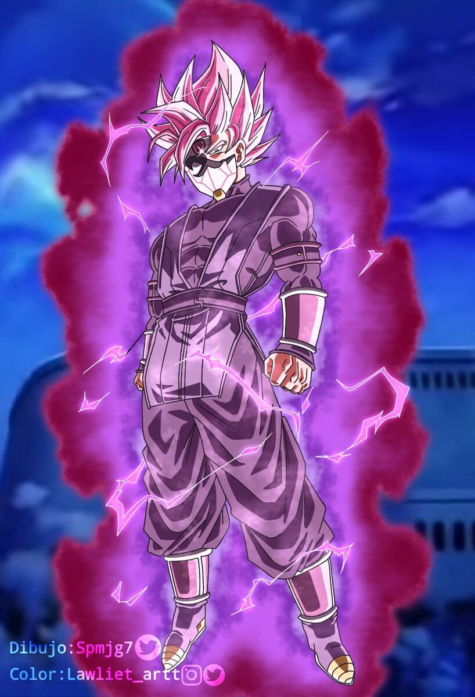
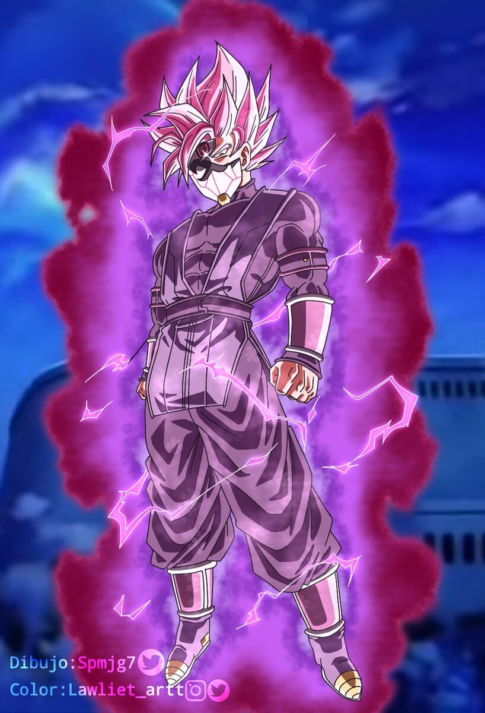

Supersaiyano Rosado
Es la versión de Goku Black y Zamas Pothala del Supersaiyano (específicamente la versión de una deidad del Supersaiyano Dios Supersaiyano) que rivaliza en poder con el Supersaiyano Azul.
El cabello se eriza de forma idéntica al de Son Goku, con la suma de un pequeño ahoge al lado derecho. El color de sus cabellos y cejas son color rosa claro. Sus ojos son grises. El aura adopta tonalidad carmesí y rosa con su núcleo violeta y púrpura.
En lo que respecta a Zamas Pothala, su forma es una perfecta amalgama entre ambos componentes. Su color es blanco y cubre todo el cráneo, similar al Supersaiyano de Black, incluyendo su pequeño ahoge. Ahora el cabello es más alzado y su flequillo muestra dos grandes mechones, uno más largo que otro. El aura del Ki, por otra parte, presenta un color nácar y un brillo con los colores del arcoíris en el espectro visible.
 
